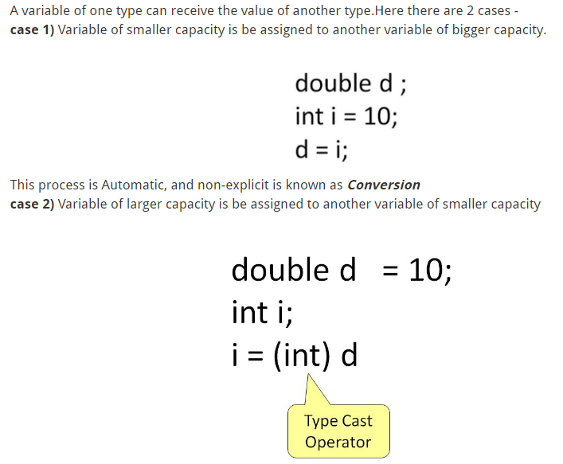

Data Types
In Java there are 8 Data Types Present
Points to Remember:
- All numeric data types are signed(+/-).
- The size of data types remain the same on all platforms (standardized)
- char data type in Java is 2 bytes because it uses UNICODE character set. By virtue of it, Java supports internationalization. UNICODE is a character set which covers all known scripts and language in the world
Java Variable Type Conversion and Type Casting

In such cases you have to explicitly specify the type cast operator. This process is known as Type Casting.
In case, you do not specify a type cast operator, the compiler gives an error. Since this rule is enforced by the compiler , it makes the programmer aware that the conversion he is about to do may cause some loss in data and prevents accidental losses.
Go to Practice Tab for ASSIGNMENT 1